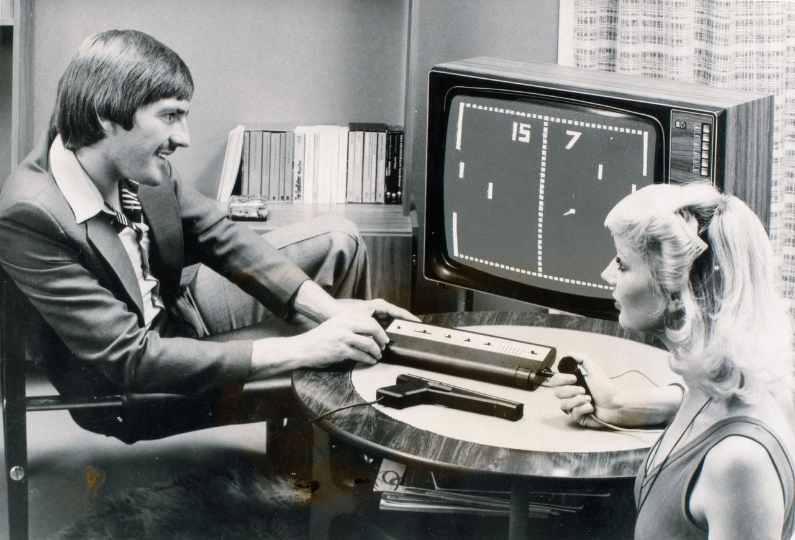
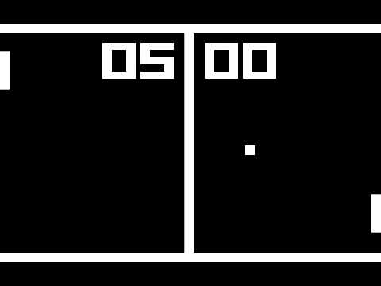

Over Pong Classic
Pong is een van de eerste arcade-videospellen, uitgebracht in 1972 door Atari. Het spel simuleert tafeltennis en is eenvoudig van opzet, maar zeer verslavend.
Geschiedenis
Pong werd ontwikkeld door Allan Alcorn als een oefening voor Atari, op verzoek van medeoprichter Nolan Bushnell. Het idee was gebaseerd op een elektronisch pingpongspel dat deel uitmaakte van de Magnavox Odyssey, de eerste thuisvideogameconsole. Pong werd snel een groot succes en wordt beschouwd als een van de meest invloedrijke videospellen aller tijden.
Gameplay
In Pong bestuurt de speler een peddel die verticaal over het scherm beweegt. Het doel is om de bal naar de tegenstander te slaan en punten te scoren door de bal langs de peddel van de tegenstander te krijgen. Het spel gaat door totdat een van de spelers een vooraf bepaald aantal punten heeft bereikt of de tijd om is.
